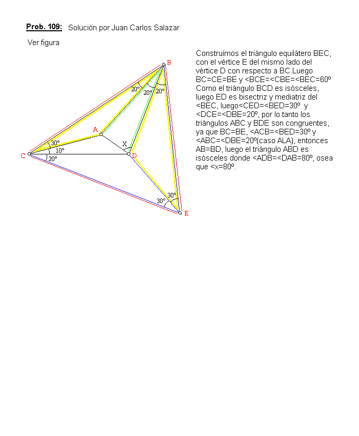

En la figura (ver abajo):
Es el triángulo BCD, con A en el interior tal que:
< CBA = < ABD = 20º, < BCA = 30º, < DCA =10º. Calcular < BDA, y demostrar que AB=BD.
Salazar, J.C. (2003): Comunicación personal.
Solución de Juan Carlos Salazar, Profesor de Geometría del Equipo Olímpico de Venezuela.(Puerto Ordaz) (17 de julio de 2003)
